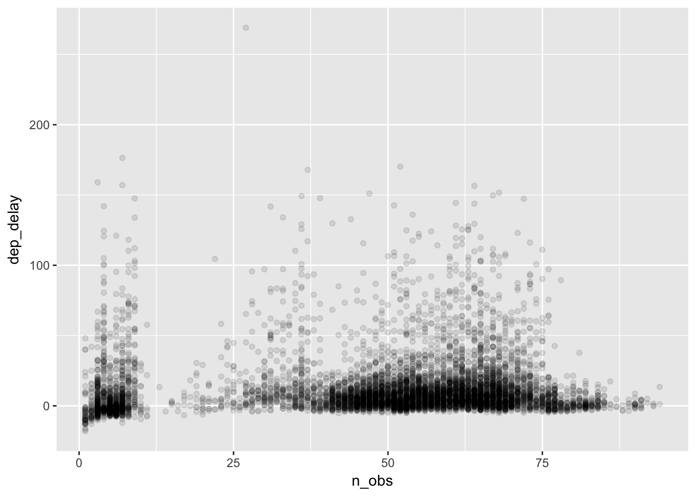
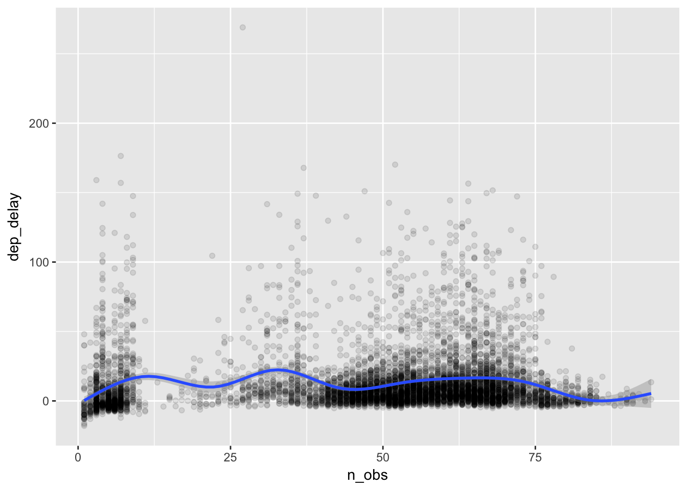
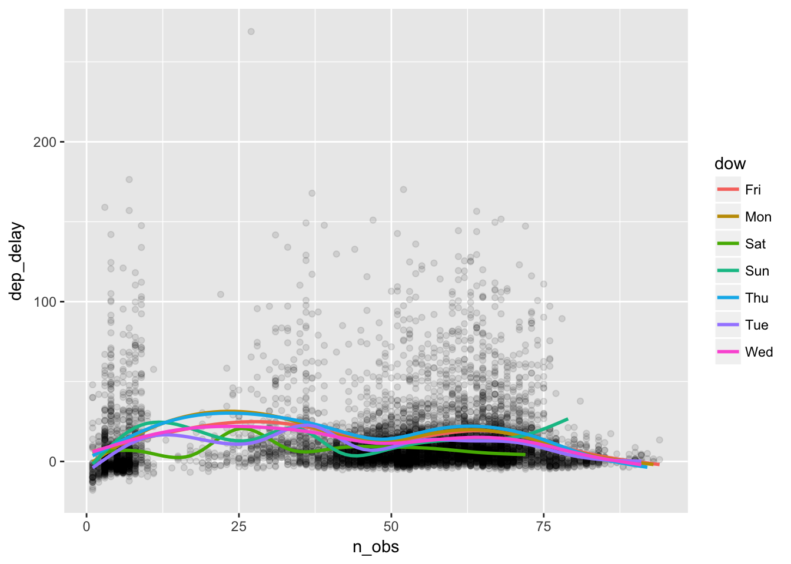

2.4 More examples 1
The rest of the section provides more examples of dplyr and ggplot2 functions in the context of continued exploration of the flight data.
Let’s see if there are distinct patters of departure delays over the course of a year. We can do this by taking the average of departure delays for each day by flight origin and plot the data as a time series using line-graphs.
delay_day <- flights %>%
group_by(origin, year, month, day) %>%
summarise(dep_delay = mean(dep_delay, na.rm = TRUE)) %>%
mutate(date = as.Date(paste(year, month, day), format="%Y %m %d")) %>%
filter(!is.na(dep_delay)) # exclude rows with dep_delay == NA
delay_day %>% # "facet_grid( var ~ .)" is similar to "facet_wrap( ~ var)"
ggplot(aes(x = date, y = dep_delay)) + geom_line() + facet_grid( origin ~ . ) 
Seasonal patterns seem similar across airports, and summer months appear to be busier on average. Let’s see how closely these patterns compare across the three line-graphs (EWR, JFK, and LGA) in summer months.
delay_day %>%
filter("2013-07-01" <= date, "2013-08-31" >= date) %>%
ggplot(aes(x = date, y = dep_delay, color = origin)) + geom_line() 
We can see similar patterns of spikes across airports occurring on certain days, indicating a tendency for the three airports to get busy on the same days. Would this mean that the three airports tend to be congested at the same time?
In the previous figure, there seems to be some cyclical pattern of delays. A good place to start would be comparing delays by day of the week. Here is a function to calculate day of the week for a given date.
# Input: date in the format as in "2017-01-23"
# Output: day of week
my_dow <- function(date) {
# as.POSIXlt(date)[['wday']] returns integers 0, 1, 2, .. 6, for Sun, Mon, ... Sat.
# We extract one item from a vector (Sun, Mon, ..., Sat) by position numbered from 1 to 7.
dow <- as.POSIXlt(date)[['wday']] + 1
c("Sun", "Mon", "Tue", "Wed", "Thu", "Fri", "Sat")[dow] # extract "dow"-th element
}
Sys.Date() # Sys.Date() returns the current date ## [1] "2018-06-22"my_dow(Sys.Date()) ## [1] "Fri"Now, let’s take a look at the mean delay by day of the week using boxplots.
delay_day <- flights %>%
group_by(year, month, day) %>%
summarise(dep_delay = mean(dep_delay, na.rm = TRUE)) %>%
mutate(date = as.Date(paste(year, month, day), format="%Y %m %d"),
# date defined by as.Data() function
dow = my_dow(date),
weekend = dow %in% c("Sat", "Sun")
# %in% operator: A %in% B returns TRUE/FALSE for whether each element of A is in B.
)
# show the first 10 elements of "dow" variable in "delay_day" data frame
delay_day$dow[1:10] ## [1] "Tue" "Wed" "Thu" "Fri" "Sat" "Sun" "Mon" "Tue" "Wed" "Thu"delay_day <- delay_day %>% mutate(
# add a sorting order (Mon, Tue, ..., Sun) and overwrite dow
dow = ordered(dow,
levels = c("Mon", "Tue", "Wed", "Thu", "Fri", "Sat", "Sun"))
)
delay_day$dow[1:10] ## [1] Tue Wed Thu Fri Sat Sun Mon Tue Wed Thu
## Levels: Mon < Tue < Wed < Thu < Fri < Sat < Sundelay_day %>%
filter(!is.na(dep_delay)) %>%
ggplot(aes(x = dow, y = dep_delay, fill = weekend)) + geom_boxplot() It appears that delays are on average longer on Thursdays and Fridays and shorter on Saturdays. This is plausible if more people are traveling on Thursdays and Fridays before the weekend, and less are traveling on Saturdays to enjoy the weekend. Are Saturdays really less busy? Let’s find out.
flights_dow <- flights %>%
mutate(date = as.Date(paste(year, month, day), format="%Y %m %d"),
dow = ordered(my_dow(date),
levels = c("Mon", "Tue", "Wed", "Thu", "Fri", "Sat", "Sun")),
weekend = dow %in% c("Sat", "Sun")
)
# count flight numbers by
flights_dow %>%
group_by(dow) %>%
summarise( nobs = n() )## # A tibble: 7 x 2
## dow nobs
## <ord> <int>
## 1 Mon 50690
## 2 Tue 50422
## 3 Wed 50060
## 4 Thu 50219
## 5 Fri 50308
## 6 Sat 38720
## 7 Sun 46357# visualize this as a bar plot
flights_dow %>%
ggplot(aes(x = dow)) + geom_bar() 
Yes, Saturdays are less busy for the airports in terms of flight numbers.
Could we generalize this positive relationship between the number of flights and the average delays, which we find across days of the week? To explore this, we can summarize the data into the average delays by date-hour and see if the busyness of a particular hour of a particular day is correlated with the mean delay. Let’s visualize these data using a scatter plot.
delay_day_hr <- flights %>%
group_by(year, month, day, hour) %>% # grouping by date-hour
summarise(
n_obs = n(),
dep_delay = mean(dep_delay, na.rm = TRUE)
) %>%
mutate(date = as.Date(paste(year, month, day), format="%Y %m %d"),
dow = my_dow(date)
) %>% ungroup() # it's a good practice to remove group_by() attribute
plot_delay <- delay_day_hr %>%
filter(!is.na(dep_delay)) %>%
ggplot(aes(x = n_obs, y = dep_delay)) + geom_point(alpha = 0.1)
# plot of n_obs against the average dep_delay
# where each point represents an date-hour average
# "alpha = 0.1" controls the degree of transparency of points
plot_delay 
Along the horizontal axis, we can see how the number of flights is distributed across date-hours. Some days are busy, and some hours busier still. It appears that there are two clusters in the number of flights, showing very slow date-hours (e.g., less than 10 flights flying out of New York city per hour) and normal date-hours (e.g., about 50 to 70 flights per hour). We might guess that the delays in the slow hours are caused by bad weather. On the other hand, for normal hours we may wonder if the excess delays are caused by congestion at the airports. To see this, let’s fit a curve that captures the relationships between n_obs and dep_delay. Our hypothesis is that the delay would become longer as the number of flights increases, which would result in an upward-sloped curve.
plot_delay +
geom_smooth() # geom_smooth() addes a layer of fitted curve(s) ## `geom_smooth()` using method = 'gam'
We cannot see any clear pattern. How about fitting a curve by day of the week?
plot_delay +
# additional aes() argument for applying different colors to the day of the week
geom_smooth(aes(color = dow), se=FALSE) ## `geom_smooth()` using method = 'gam'
Surprisingly, the delay does not seem to increase with the flights. There are more delays on Thursdays and Fridays and less delays on Saturdays, but we see no evidence of flight congestion as a cause of delay.
Let’s take a closer look at the distribution of the delays. If it is not normally distributed, we may want to apply a transformation.
delay_day_hr %>% filter(!is.na(dep_delay)) %>%
ggplot(aes(x = dep_delay)) + geom_histogram(color = "white") ## `stat_bin()` using `bins = 30`. Pick better value with `binwidth`.
The distribution of the average delays are greatly skewed.
To apply a logarithmic transformation, here we have to shift the variable by setting its minimum value zero.
# define new column called "dep_delay_shifted"
delay_day_hr <- delay_day_hr %>%
mutate(dep_delay_shifted = dep_delay - min(dep_delay, na.rm = TRUE) + 1)
# check summary stats
delay_day_hr %>%
select(dep_delay, dep_delay_shifted) %>%
with(
apply(., 2, summary)
) %>% t() # transpose rows and columns ## Min. 1st Qu. Median Mean 3rd Qu. Max. NA's
## dep_delay -18 1.0543 6.571429 12.98602 15.4414 269 13
## dep_delay_shifted 1 20.0543 25.571429 31.98602 34.4414 288 13Tips #3: with(data, ...) function allows for referencing variable names inside the data frame (i.e., “var_name” instead of “data$var_name”). This is very useful when you work with various functions that were created outside the tidyverse syntax, while keeping your codes consistent with the tidyverse syntax.
Tips #4: apply(data, num, fun) applies function “fun” for each item in dimension “num” (1 = cows, 2= columns) of the data frame. The data referenced by “.” means all variables in the dataset.
Now the transformed distribution;
# Under the log of 10 transformation, the distribution looks closer to a normal distribution.
delay_day_hr %>% filter(!is.na(dep_delay_shifted)) %>%
ggplot(aes(x = dep_delay_shifted)) +
scale_x_log10() +
geom_histogram(color = "white") ## `stat_bin()` using `bins = 30`. Pick better value with `binwidth`.# # Alternatively, one can apply the natural logarithm to transform a variable. Histogram shows no difference here.
# delay_day_hr %>% filter(!is.na(dep_delay_shifted)) %>%
# ggplot(aes(x = dep_delay_shifted)) +
# scale_x_continuous(trans = "log") +
# geom_histogram(color = "white")The transformed distribution is much less skewed than the original. Now, let’s plot the relationship between delays and flights again.
delay_day_hr %>% filter(!is.na(dep_delay_shifted), dep_delay_shifted > 5) %>%
ggplot(aes(x = n_obs, y = dep_delay_shifted)) +
scale_y_log10() + # using transformation scale_y_log10()
geom_point(alpha = 0.1) +
geom_smooth() ## `geom_smooth()` using method = 'gam'
Again we do not see a pattern of more delays for busier hours. It seems that the airports in New York City manage the fluctuating number of flights without causing congestion.